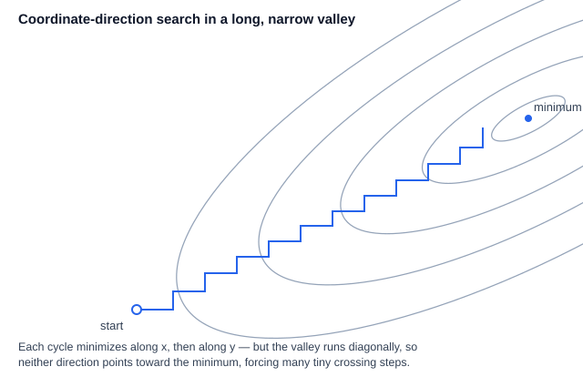

Powell’s Method
| This documentation was generated with the assistance of AI. Please report any inaccuracies. |
Powell’s method minimizes a function of several variables using only function evaluations — no gradient
required — by repeatedly running one-dimensional line minimizations along a cleverly updated set of
directions. It is described in Press et al., 2007, Sections 10.6 (page 507,
the shared line-minimization machinery) and 10.7 (page 509, Powell’s direction-set method), and implemented as
PowellMultiOptimizer in the com.irurueta.numerical.optimization package.
Line minimization as a building block
Given a point and a direction in -dimensional space, any
one-dimensional minimizer can find the scalar that
minimizes — reducing a multidimensional problem, along one direction, to a
problem already solved. Multi-variable methods differ mainly in how they pick the next direction to line-
minimize along. This package implements the shared line-minimization step once, in LineMultiOptimizer, and
both Powell’s Method (this page) and the non-derivative variant of
Conjugate Gradient Methods build on it: it wraps the target point and direction in
a 1D "directional evaluator", brackets and minimizes along it using
BrentSingleOptimizer, then updates the point and stores the actual
distance moved.
Why the coordinate directions alone are a bad choice
The naive approach — line-minimize along each of the unit vectors in turn, cycling until the function stops decreasing — is workable but can be badly inefficient: for a function whose contours form a long, narrow, diagonally-oriented valley, this takes many tiny zig-zag steps to get anywhere, crossing and re-crossing the valley’s true axis. What is needed instead is a set of conjugate directions.

Two directions and are conjugate (with respect to the local quadratic approximation of , with Hessian ) when:
The useful property: after line-minimizing along , minimizing along a direction conjugate to it does not spoil the first minimization. A full pass of minimizations along mutually conjugate directions lands exactly on the minimum of a quadratic form — and, for functions that are only approximately quadratic near their minimum, repeated passes converge quadratically.
Building conjugate directions without knowing the Hessian
Powell’s original basic procedure starts from the coordinate directions and repeats: save the starting point ; line-minimize in turn along each current direction, arriving at ; then discard the first direction, shift every other direction down by one slot, and set the new last direction to the net direction moved, . Powell showed that repetitions of this procedure produce a set of directions whose last members are mutually conjugate — so, in principle, repetitions exactly minimize a quadratic form.
In practice, though, always discarding the oldest direction this way tends to make the direction set fold up on itself and become linearly dependent — collapsing the search onto a lower-dimensional subspace and quietly returning the wrong answer. This library implements the heuristic fix Press et al., 2007 recommends: discard, instead, whichever direction produced the largest decrease during the pass — paradoxically, this is also the direction most likely to dominate the new "net movement" direction being added, so dropping it best avoids the buildup of linear dependence. Two additional safeguards decide whether to replace a direction at all:
-
If the function value at a point extrapolated further along the net direction is no better than the starting value, the net direction is "played out" — keep the old direction set unchanged.
-
If most of the pass’s decrease came from no single direction in particular, or the function appears to be near the bottom of the average direction’s own minimum, also keep the old direction set unchanged.
This trades away the strict quadratic-convergence guarantee of the "textbook" algorithm in exchange for directions that track long, twisting valleys well in practice — a good trade for exactly the kinds of functions where quadratic convergence would not have helped much anyway.
Library implementation
PowellMultiOptimizer extends LineMultiOptimizer, reusing its linmin() for every 1D sub-problem. The
direction set can be supplied explicitly or left to default to the coordinate axes:
-
setPointAndDirections(point, directions)— supply the starting point and an initial matrix of directions (its columns). -
setStartPoint(point)— supply only the starting point; the coordinate axes are used as the initial directions. -
getDirections()— the current direction set, afterminimize()updates it. -
getTolerance()/setTolerance(double)— the fractional tolerance on the function value; default3e-8.
Up to ITMAX = 200 passes (each consisting of line minimizations) are attempted before the optimizer
reports failure to converge.
| Press et al., 2007 recommends Powell’s method whenever the function has some smoothness but computing gradients is inconvenient or unavailable — it is much faster than Downhill Simplex Method (Nelder-Mead) in that situation. When gradients are available, Conjugate Gradient Methods or Quasi-Newton Method (BFGS) will typically do better still. |
Example
final var listener = new MultiDimensionFunctionEvaluatorListener() {
@Override
public double evaluate(final double[] point) {
final var dx = point[0] - 1.0;
final var dy = point[1] + 2.0;
return dx * dx + dy * dy;
}
};
final var optimizer = new PowellMultiOptimizer(listener, 3e-8);
optimizer.setStartPoint(new double[]{0.0, 0.0});
optimizer.minimize();
final var xmin = optimizer.getResult(); // approximately [1.0, -2.0]
final var fmin = optimizer.getEvaluationAtResult(); // approximately 0.0| Class | Javadoc | Source |
|---|---|---|
|
||
|